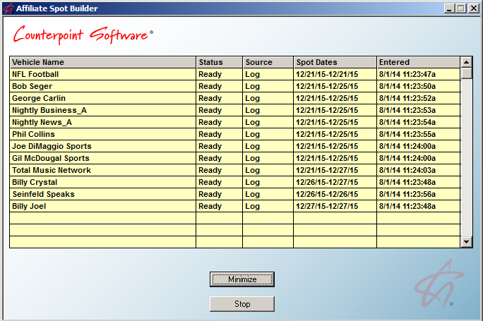
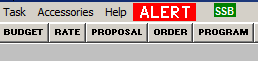
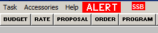
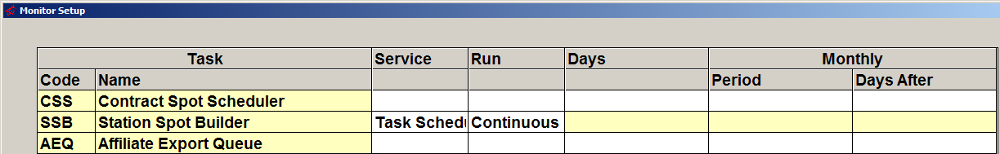
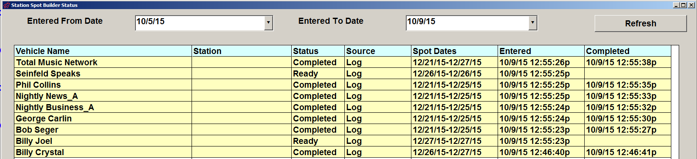

Station Spot Builder
Overview
The Station Spot Builder is a standalone utility that creates Affiliate Spots (AST records), along with the associated copy (and split copy if applicable), after the log has been generated in the Traffic System. By creating the affiliate spots (and any copy splits/regional copy associated with them) in advance, the time it takes to generate affiliate spot exports and affiliate spot reports will be reduced, since the affiliate spots will have already been created in advance by the Station Spot Builder, and will not need to be created at the time of running the export or report.
Once it has been started, the Station Spot Builder runs in the background and can simply be left running. When final or reprint logs are generated, the vehicles and dates generated will be added to a queue that gets processed automatically. Vehicles queued for processing or currently being processed will be viewable on the Station Spot Builder itself, or on the Station Spot Builder Status screen on the Affiliate System.
The Station Spot Builder can be monitored by the Task Monitor so that it will be apparent if it stops running.
The picture below shows an example of the Station Spot Builder queue with tasks queued up that are about to be processed.

Setup
There are three ways to run the Station Spot Builder: using CSI Server Manager, using Windows Task Scheduler, or as a standalone executable. Only one of the three methods should be used. Choose the method that works best for your configuration, and follow the setup instructions below for the chosen method.
CSI Server Manager Method
Follow these setup steps to configure the Station Spot Builder using the CSI Server Manager.
Navigate to the csi\prod\exe folder and open the CSI_Server.ini file with a text editor.
Near the top of file, in the “SectionNames” area, type in StationSpotBuilder after the names of the other programs already configured to on the CSI_Server.ini. After editing, it should look something like this (depending on what other programs are already configured on the CSI_Server.ini):
SectionNames = GetPaid, Efficio, StationSpotBuilder
Add a StationSpotBuilder section to the CSI_Server.ini file by copying the text below to the end of the CSI_Server.ini file.
[StationSpotBuilder]
Enabled = 1
WeekDays = 1111111
StartTime = 6:00AM
Interval = 86400
Exe = x:\csi\prod\exe\stationspotbuilder.exe
StartInFolder = x:\csi\prod\data
CommandLine =
KeepProgramRunning = 1
Edit the Exe path on the copied text to point to the StationSpotBuilder.exe file in your csi\prod\exe folder.
Edit the StartInFolder path to point to the location of the affiliat.ini and traffic.ini file (typically in the Data folder).
Start the CSI Server Manager if it’s not already running by running CSI_Server_Mngr.exe from the Exe folder.
With this configuration on the CSI_Server.ini, the system will keep the program running in the background all the time.
Windows Task Scheduler Method
Windows Task Scheduler can be used as an alternative way of running the Station Spot Builder. Follow these steps to configure the Station Spot Builder to run using Task Scheduler.
- Start Windows Task Scheduler and select “Create Task”.
- Enter a name for the task in the name field, such as “Station Spot Builder”.
- Press the Trigger tab and select New.
- From the “Begin the Task” selection, chose “At Startup”, then press OK.
- Press the Actions tab and select New.
- The Action should be set to “Start a Program”. Press the Browse button and browse to the StationSpotBuilder.exe in the exe folder.
- In the Start-In area, enter the location of the Traffic.ini and Affiliat.ini, typically csi\prod\data, then press OK.
- Press the Settings tab.
- Check on the option labeled “If the task fails, restart every:”, and set the restart time to 1 minute.
- Deselect the option labeled “Stop the task if it runs longer than”.
- Verify that “Do not start a new instance” is selected at the bottom of the screen, and press OK to finish creating the task.
- You can now start the task by selecting it from the list and choosing Run. It will also start automatically each time the computer it is on is restarted.
With Windows Task Scheduler, using the configuration steps listed above, the Station Spot Builder will keep running in the background. If for some reason it stops running, Task Scheduler will check every minute and start it again if it’s not running.
Standalone Executable (Shortcut) Method
The Station Spot Builder can also be run as a standalone executable on a PC. This method is primarily for testing, as it requires manually starting the utility and has no feature to ensure that it is kept running. The other two methods, described later in this document, will automatically start the utility and keep it running should it get terminated for some reason.
To use the Station Spot Builder as a standalone executable, follow these steps:
- Create a shortcut on a PC that will be used to launch the program. (Note: this system must already have been configured with the required Counterpoint system files.)
- Edit the shortcut, setting the “Target” to point to the StationSpotBuilder.exe in the csi\prod\exe folder.
- Edit the “Start in” to point to the location of the traffic.ini and affiliat.ini file (generally in the csi\prod\data folder).
- After creating the shortcut, double click on Station Spot Builder shortcut, and the utility will begin running. You can leave the window open while working, or minimize it.
This method should only be used for testing. Set up the Station Spot Builder to be run by the CSI Server Manager or Windows Task Scheduler for production system use.
Setting up the Task Monitor to Monitor the Status of the Station Spot Builder
Use the Task Monitor to monitor that the status of the Station Spot Builder. With the Task Monitor monitoring the status of the Station Spot Builder, if the system is able to communicate with the Station Spot Builder, the “SSB” (Station Spot Builder) notification in the title bar of the Traffic and Affiliate system will be green, as shown below.

If the Station Spot Builder stopped running for some reason, the “SSB” notification in the title bar of the Traffic and Affiliate system will turn red, indicating that the system is no longer in communication with the Station Spot Builder, as shown below.

To configure the Station Spot Builder for monitoring by the Task Monitor, launch the “Monitor Setup” program using the shortcut. For the Station Spot Builder task, set the “Service” setting to “CSI Service” or “Task Scheduler”, and set the “Run” setting to “Continuous”.

After configuring these settings, press Save and close the Monitor Setup program. The Station Spot Builder will now be configured for monitoring by the Task Monitor.
For additional information on the Task Monitor, see the “Traffic Utilities” or “Affiliate Utilities” help documents available on the Counterpoint website.
Station Spot Builder Information
Once the Station Spot Builder has been started, if it was configured correctly, it will be in constant communication with the Traffic and Affiliate system.
When logs are printed or agreements changed so that affiliate spots need to be created, the Station Spot Builder will queue up the tasks for processing then process them automatically, creating the affiliate spots in advance so that when affiliate exports or affiliate spot reports are run, the affiliate spots will have already been created.
Station Spot Builder Status Menu
To see a list of tasks either being processed by the Station Spot Builder, or that are waiting to be processed, or that have been processed using the selected “Entered From Date” and “Entered To Date”, select “Station Spot Builder Status” from the Affiliate->File menu to bring up the Station Spot Builder Status screen (shown below). These dates can be changed if needed. The Refresh button when pressed will refresh the list of tasks (it also refreshes automatically when launching this screen).

Each task displays the following:
- Vehicle name: the name of the vehicle that the task is for.
- Station name: when an agreement is entered or changed and affiliate spots need to be created for the station, the station will be shown here.
- Status: the available values are On Hold/Not Ready (the task is being added to the queue and is not yet ready), Ready (waiting to process), Processing (being processed) and Completed.
- Source: the available values are Log and Agreement. When the log was generated, triggering the need to create affiliate spots, it will show “Log” in this field. If an agreement was changed or added in such a way that it triggered the need to create affiliate spots, it will show “Agreement” here.
- Spot Dates: the date range of affiliate spots.
- Entered: the date and time the task was added to the Station Spot Builder queue.
- Completed: the date and time the task was completed (this will be blank if the task has not yet been completed).
When the Station Spot Builder is Not Running
If the Station Spot Builder is not running when logs are generated, the affiliate spots will not be created through the Station Spot Builder. Instead, the affiliate spots will be created as needed when affiliate spot exports are run, when affiliate spot reports are run, or when viewing affiliate spots on the Affiliate Affidavits screen or other Affiliate system screens, in the way that the system worked before the Station Spot Builder feature was added. If the Station Spot Builder is not running when logs are generated, there will not be any of the speed benefits that come with using the Station Spot Builder, but the system will still function correctly, creating the affiliate spots on as needed basis instead of in advance.
Should the Station Spot Builder stop running, the time that it stopped will appear on the Affiliate Error Log, which can be reviewed in the Affiliate->Accessories->Messages Viewer. Note that if the Spot Builder is manually shut down by a user, the shutdown will not be logged.
To start the Station Spot Builder again when it’s stopped running, launch the Station Spot Builder shortcut. It is also possible to configure the Station Spot Builder to start itself again automatically if it shuts down when configuring the task in the CSI Server Manager or Windows Task Scheduler, as explained above, although this feature is not available when running the Station Spot Builder as a standalone executable (shortcut method).